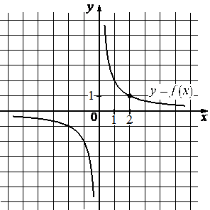

Авторский разбор и аудит предварительны; внешней экспертизы нет.
Модель автора: claude-opus-5-5 (opus; effort=low); в основных частотах: True ·
Впишите правильный ответ.
На рисунке изображён график функции вида . Найдите
значение .

КЭС: 3.1 Функция, способы задания функции. График функции. Взаимно обратные функции. Чётные и нечётные функции. Периодические функции
0,2
| ID / вход | Действие | Результат | Локальные KC |
|---|---|---|---|
| s1 · condition | Считать с графика координаты отмеченной точки с целыми координатами, принадлежащей графику | Точка (2; 1) лежит на графике | kc1 |
| s2 · condition, s1 | Подставить координаты точки в формулу f(x)=k/x и найти k | 1 = k/2, k = 2 | kc2 |
| s3 · s2 | Вычислить значение функции f(x)=2/x при x=10 | f(10) = 0,2 | kc3 |
[
{
"id": "m1",
"name": "Восстановление формулы по точке графика и вычисление значения",
"step_ids": [
"s1",
"s2",
"s3"
]
}
]Вход: график функции на координатной сетке. Операция: найти точку графика с целочисленными координатами (отмеченную или проходящую через узел сетки) и считать её координаты. Граница: только точки, координаты которых однозначно читаются по рисунку.
{
"local_kc_id": "kc1",
"status": "match",
"catalog_kc_id": "graph_coordinates",
"evidence": [
{
"ref": "step:s1:result",
"quote": "Точка (2; 1) лежит на графике"
},
{
"ref": "image:assets/5c779c249fa426580d1a39ca.png",
"region_description": "Правая ветвь гиперболы в первой четверти; отмеченная жирной точкой точка графика на пересечении линии x=2 (подпись 2 на оси x) и уровня y=1 (подпись 1 на оси y)"
}
],
"context_refs": [
"condition"
],
"alternatives_checked": [],
"rationale": "Считывание координат явно отмеченной точки графика по клетчатой сетке с подписанным масштабом; восстановление формулы выполнено отдельно в s2, что соответствует границе определения.",
"proposal": null,
"blocking": false,
"issue_ids": []
}Вход: формула функции заданного вида с неизвестным параметром и координаты точки графика. Операция: подставить координаты в формулу и решить полученное уравнение относительно параметра. Граница: число неизвестных параметров не превышает числа использованных точек.
{
"local_kc_id": "kc2",
"status": "new_candidate",
"catalog_kc_id": null,
"evidence": [
{
"ref": "step:s2:result",
"quote": "1 = k/2, k = 2"
}
],
"context_refs": [
"condition",
"step:s1:result"
],
"alternatives_checked": [
{
"catalog_kc_id": "direct_proportion",
"reason": "Определение для y=kx; здесь обратная пропорциональность f(x)=k/x, k=xy, а не y/x."
},
{
"catalog_kc_id": "literal_51a8c0abd718",
"reason": "Только для y=a√x."
},
{
"catalog_kc_id": "literal_3ac0ecd3cd49",
"reason": "Только для показательной функции y=a^x."
},
{
"catalog_kc_id": "literal_f253b50b98a1",
"reason": "Линейная функция по двум точкам."
},
{
"catalog_kc_id": "literal_6241f0b09502",
"reason": "Квадратная функция по нулям и точке."
}
],
"rationale": "Подстановка точки (2;1) в f(x)=k/x и нахождение k=2. В каталоге есть только узлы восстановления коэффициента для конкретных классов функций (y=kx, y=a√x, y=a^x), обратной пропорциональности нет. Авторский кандидат общий («формула заданного вида»), но наблюдаемое действие — частный случай k/x.",
"proposal": {
"name": "Восстанавливать коэффициент обратной пропорциональности по точке",
"definition": "Для y=k/x по точке графика с ненулевой абсциссой (x0;y0) найти k=x0·y0."
},
"blocking": false,
"issue_ids": []
}Вход: полностью заданная формула функции и значение аргумента из области определения. Операция: подставить аргумент и вычислить значение.
{
"local_kc_id": "kc3",
"status": "match",
"catalog_kc_id": "literal_6308771d01a6",
"evidence": [
{
"ref": "step:s3:action",
"quote": "Вычислить значение функции f(x)=2/x при x=10"
},
{
"ref": "step:s3:result",
"quote": "f(10) = 0,2"
}
],
"context_refs": [
"step:s2:result"
],
"alternatives_checked": [
{
"catalog_kc_id": "physical_formula_substitution",
"reason": "Касается соотнесения прикладных величин и единиц с обозначениями формулы, а не значения функции."
}
],
"rationale": "Подстановка x=10 в установленную формулу f(x)=2/x (из s2), x=10 в области определения; 2/10=0,2 верно.",
"proposal": null,
"blocking": false,
"issue_ids": []
}[]
[]
{
"author_path": "data/annotation/runs/2026-11-07-fipi-team-bogdan108-051-150/raw/author/08C3D9.json",
"auditor_path": "data/annotation/runs/2026-11-07-fipi-team-bogdan108-051-150/raw/auditor/08C3D9.json",
"accepted_after_review": null
}